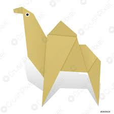

Origami Designs
About Me
Follow Me

Interesting Facts about Chameleon
- Chameleons are reptiles that are part of the the iguana suborders.
- Changing skin colo is an important part of communication among Chameleons.
- Most chameleons have a prehensile tail that they use to wrap around tree branches.

Interesting Facts about Pigeon
- Pigeons are incredibly complex and intelligent animals.
- Pigeons are reowned for their outstanding navigational abilities.
- Pigeons have excellent hearing abilities.
*Note : Don't go near birds because of bird flu.

Interesting Facts about Camels
- There are two types of camels: One humped or “dromedary” camels and two humped Bactrian camels.
- Camels have three sets of eyelids and two rows of eyelashes to keep sand out of their eyes.
- Camels have thick lips which let them forage for thorny plants other animals can't eat.

Interesting Facts about Panda
- Giant pandas are good at climbing trees and can also swim
- Pandas have so many fans because they look cute.
- An adult can eat 12–38 kilos of bamboo per day!